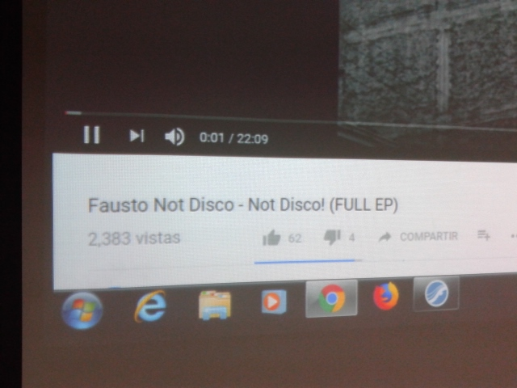

Composición III
Clase 009

Sinfonía N 5
Ludwig van Beethoven
Sinfonía No.6 op.74
Piotr Ilich TchaikovskySinfonía Fantástica
Hector Berlioz

Disco Secreto:
Postdata
Pieza para 3 instrumentos terminada
Segundo capitulo del Introducción a la Música de Otto Karolyi
Analizar "Serenata para Cuerdas" de Tchaikovsky
009